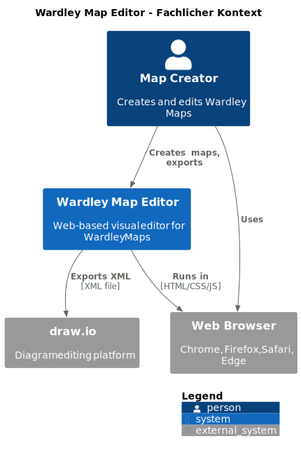
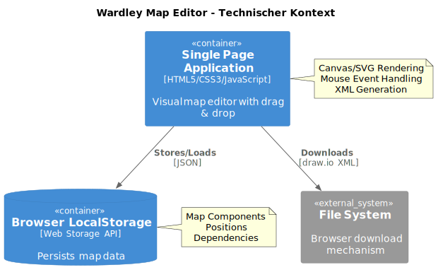
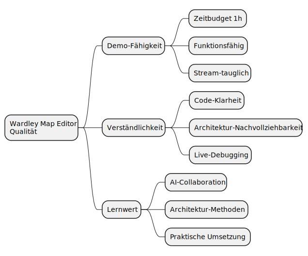

Beschreibt die wesentlichen Anforderungen und treibenden Kräfte, die bei der Umsetzung der Softwarearchitektur und Entwicklung des Systems berücksichtigt werden müssen.
Architecture Documentation: Wardley Map Editor
Ralf D. Müller <ralf.d.mueller@gmail.com> :doctype: book :toc: left :toclevels: 3 :sectnum: :sectanchors: :sectnums: :source-highlighter: highlight.js :icons: font :imagesdir: images
1. Einführung und Ziele
1.1 Aufgabenstellung
Was ist der Wardley Map Editor?
Ein web-basierter Editor zur visuellen Erstellung von Wardley Maps mit Export-Funktionalität zu draw.io.
KRITISCHE FRAGE: Warum brauchen wir das?
Existierende Tools: * Online Wardley Maps - bereits verfügbar * Verschiedene draw.io Templates * Text-basierte Tools
Was macht unseren Editor einzigartig?
Wesentliche Features (MVP für Demo)
-
Basis-Canvas
-
Wardley Map Koordinatensystem (Evolution/Value-Achsen)
-
Einfache Komponenten-Platzierung
-
-
Minimaler Export
-
JSON-Export der Map-Daten
-
Grundlegende draw.io XML-Generierung
-
-
Live-Demo tauglich
-
Funktioniert im Browser
-
Visuell ansprechend für Stream
-
1.2 Qualitätsziele
| Priorität | Qualitätsziel | Szenario/Messbarkeit |
|---|---|---|
1 |
Demo-Fähigkeit |
Funktionierender Prototyp präsentierbar in 1 Stunde Live-Stream |
2 |
Verständlichkeit |
Zuschauer können den Architektur-Ansatz nachvollziehen und diskutieren |
3 |
Lernwert |
Demonstration von Human-AI Collaboration in der praktischen Architekturarbeit |
Demo-Fokus: Diese Qualitätsziele spiegeln den experimentellen Charakter der Live-Session wider. Das Ziel ist nicht ein produktionsreifes System, sondern ein funktionierender Demonstrator für Architektur-Methoden.
1.3 Stakeholder
| Rolle | Kontakt | Erwartungen |
|---|---|---|
Stream-Zuschauer |
Software Architektur im Stream Community |
Lernen, wie AI-assistierte Architektur funktioniert |
Wardley Map Praktiker |
Simon Wardley Community |
Einfaches Tool für Map-Erstellung |
Enterprise Architects |
Unternehmen mit draw.io-Infrastruktur |
Integration in bestehende Tool-Landschaft |
Entwickler-Team |
Ralf + Claude (AI) |
Demonstrieren von Human-AI Collaboration |
REALITÄTS-CHECK: Haben wir tatsächlich mit echten Wardley Map-Nutzern gesprochen? Oder entwickeln wir "ins Blaue hinein"?
2. Randbedingungen
2.1 Technische Randbedingungen
| Randbedingung | Beschreibung | Begründung |
|---|---|---|
Browser-Support |
Moderne Browser (Chrome 90+, Firefox 88+, Safari 14+, Edge 90+) |
ES6+ Features, Canvas/SVG APIs needed Legacy browser support würde zu viel Zeit kosten |
Client-Side Only |
Keine Server-Komponente, Backend, Datenbank |
Zeitbudget: 1 Stunde - kein Setup von Server-Infrastruktur möglich |
Vanilla JavaScript |
Keine Frameworks (React, Vue, Angular) |
Zeitbudget: 1 Stunde - kein Build-Setup, direktes HTML/JS |
draw.io Kompatibilität |
XML-Export muss draw.io-Format entsprechen |
Demo-Ziel: Integration in bestehende Tools zeigen |
2.2 Organisatorische Randbedingungen
| Randbedingung | Beschreibung | Begründung |
|---|---|---|
Entwicklungszeit |
~1 Stunde Live-Stream für MVP |
Stream-Format - feste Sendezeit, experimenteller Charakter |
Open Source |
MIT License, GitHub Repository |
Community-Projekt, Bildungszweck, Nachnutzung erwünscht |
Keine externen Dependencies |
Keine npm packages, CDNs, Build-Tools |
Zeitbudget: 1 Stunde - kein Setup von Build-Pipeline möglich |
Live-Entwicklung |
Transparenter, ungeschönter Entwicklungsprozess |
Stream-Ziel: Echte AI-Human Collaboration zeigen |
2.3 Konventionen
| Bereich | Konvention |
|---|---|
Dokumentation |
arc42 Template mit AsciiDoc docToolchain für Generierung |
Code Style |
ES6+ Standards Kommentare in Englisch |
Versionierung |
Git Flow, semantische Versionierung GitHub Issues für Features |
Diagramme |
PlantUML für Architektur-Diagramme |
2.4 Wardley Map Spezifische Constraints
| Constraint | Beschreibung |
|---|---|
Koordinatensystem |
X-Achse: Evolution (Genesis → Commodity) Y-Achse: Value Chain (High → Low) Werte: 0-1 normalisiert |
Komponenten-Typen |
Standard Wardley Map Elemente: - Components (Rechtecke) - Dependencies (Linien) - Annotations (Text) |
draw.io Mapping |
Wardley Koordinaten → draw.io Pixel-Koordinaten Erhaltung der relationalen Positionen |
2.5 Offene technische Entscheidungen
Die folgenden technischen Entscheidungen werden als Architecture Decision Records (ADRs) dokumentiert:
-
Canvas vs. SVG für Rendering → ADR-001 (geplant)
-
LocalStorage vs. InMemory für Persistierung → ADR-002 (geplant)
-
Mouse-Only vs. Touch-Support → ADR-003 (geplant)
3. Kontextabgrenzung
3.1 Fachlicher Kontext

Kommunikationspartner:
| Partner | Input | Output |
|---|---|---|
Map Creator (User) |
Mouse/Keyboard-Interaktionen Drag & Drop, Clicks, Text-Input |
Visuelle Wardley Map draw.io XML-Datei (Download) |
draw.io |
XML-Import der generierten Datei |
Editierbare Diagramme |
Web Browser |
HTML/CSS/JavaScript-Ausführung LocalStorage-Zugriff |
Gerenderte Benutzeroberfläche |
Abgrenzung - Was unser System NICHT macht: * Kein Import von existierenden Maps * Keine Kollaboration/Multi-User * Keine Cloud-Synchronisation * Keine Versionierung
3.2 Technischer Kontext

Technische Schnittstellen:
| Interface | Protokoll/Format | Input | Output |
|---|---|---|---|
Canvas/SVG Rendering |
Browser Canvas/SVG API |
Map Data (JSON) |
Visual Representation |
LocalStorage |
Web Storage API |
Map Objects (JSON) |
Persistent Storage (Browser-lokal) |
File Download |
Browser Download API |
draw.io XML |
.drawio File (Download) |
Mouse/Touch Events |
DOM Events |
User Interactions |
Component Positions/Updates |
Technische Abgrenzung: * Kein Server-Backend * Keine REST APIs * Keine WebSocket-Verbindungen * Keine externe Cloud-Services
3.3 Externe Schnittstellen
draw.io XML Format
Zweck: Export von Wardley Maps als editierbare draw.io-Diagramme
Format Spezifikation:
<mxGraphModel dx="1422" dy="794" grid="1" gridSize="10">
<root>
<mxCell id="0"/>
<mxCell id="1" parent="0"/>
<!-- Wardley Map Components -->
<mxCell id="component1" value="User Needs"
style="rounded=0;whiteSpace=wrap;html=1;"
vertex="1" parent="1">
<mxGeometry x="100" y="50" width="120" height="60" as="geometry"/>
</mxCell>
<!-- Dependencies -->
<mxCell id="edge1" style="edgeStyle=orthogonalEdgeStyle;"
edge="1" parent="1" source="component1" target="component2">
</mxCell>
</root>
</mxGraphModel>Koordinaten-Mapping: - Wardley X (0-1) → draw.io X (0-1200px) - Wardley Y (0-1) → draw.io Y (0-800px)
Browser LocalStorage
Zweck: Lokale Persistierung der Map-Daten (nur Browser-lokal)
Datenformat:
{
"mapId": "uuid-v4",
"title": "My Wardley Map",
"components": [
{
"id": "comp1",
"label": "User Needs",
"x": 0.2,
"y": 0.9,
"evolution": "genesis"
}
],
"dependencies": [
{
"from": "comp1",
"to": "comp2"
}
],
"lastModified": "2025-06-13T11:18:00Z"
}4. Lösungsstrategie
4.1 Überblick
Die Lösungsstrategie für den Wardley Map Editor basiert auf Einfachheit und Geschwindigkeit der Implementierung, um in der verfügbaren Zeit von ~25 Minuten einen funktionsfähigen Demonstrator zu erstellen.
4.2 Zentrale Architekturentscheidungen
| Entscheidung | Lösung | ADR |
|---|---|---|
Rendering-Technologie |
SVG für Visualisierung |
ADR-001 |
Architektur-Pattern |
Simple Event Handlers, keine Frameworks |
ADR-002 |
Daten-Persistierung |
Browser LocalStorage |
ADR-003 |
User Interaction |
Mouse-Only (kein Touch/Keyboard) |
ADR-004 |
4.3 Technologie-Stack
Frontend: - HTML5 + CSS3 für Layout - Vanilla JavaScript ES6+ für Logik - SVG für Wardley Map Rendering - LocalStorage für Datenpersistierung
Export: - draw.io XML Format für Interoperabilität
Entwicklung: - Keine Build-Tools oder Dependencies - Direkte Implementierung in Browser
4.4 Implementierungsstrategie
Phase 1: Basis-Framework (10 Min) 1. HTML-Struktur mit SVG-Container 2. CSS-Styling für Wardley Map Layout 3. Grundlegende Event-Handler Setup
Phase 2: Core Funktionalität (10 Min) 4. Komponenten-Erstellung per Klick 5. Drag & Drop für Positionierung 6. LocalStorage Save/Load
Phase 3: Export (5 Min) 7. draw.io XML-Generierung 8. Download-Funktionalität
4.5 Qualitätssicherung
Live-Demo Fokus: - Einfacher, nachvollziehbarer Code - Debugging-freundliche Implementierung - Visuell ansprechende Demo
Technische Qualität: - Browser DevTools Integration (SVG DOM) - Error Handling für User Inputs - Responsive Layout für Stream-Darstellung
4.6 Risiko-Mitigation
Zeit-Risiko: Fokus auf MVP-Features, keine Nice-to-Haves Komplexitäts-Risiko: Bewusst einfache Implementierung ohne Over-Engineering Demo-Risiko: Schritt-für-Schritt Entwicklung mit funktionsfähigen Zwischenstände
Unresolved directive in <stdin> - include::05_building_block_view.adoc[]
Unresolved directive in <stdin> - include::06_runtime_view.adoc[]
Unresolved directive in <stdin> - include::07_deployment_view.adoc[]
Unresolved directive in <stdin> - include::08_concepts.adoc[]
9. Architekturentscheidungen
Alle Architekturentscheidungen für den Wardley Map Editor sind als Architecture Decision Records (ADRs) dokumentiert. Diese wurden während der Live-Session basierend auf unserem 1-Stunden Zeitbudget getroffen.
Übersicht der Entscheidungen
| ADR | Entscheidung | Begründung |
|---|---|---|
ADR-001 |
SVG für Rendering (vs. Canvas) |
Einfacheres Event-Handling, besseres Debugging |
ADR-002 |
Simple Event Handlers (vs. MVC/Frameworks) |
Minimaler Boilerplate, schnelle Implementierung |
ADR-003 |
LocalStorage (vs. IndexedDB/No Persistence) |
Einfache API, ausreichend für Demo-Scope |
ADR-004 |
Mouse-Only Interaction (vs. Touch/Keyboard) |
Reduzierte Komplexität, Desktop-Demo fokussiert |
Architecture Decision Records
ADR-001: Rendering Technology Selection - SVG for Wardley Map Visualization
Date: |
2025-06-13 |
|---|---|
Authors: |
Ralf D. Müller, Claude (AI Assistant) |
Status: |
Final |
Problem Description and Context
We need to select a rendering technology for the Wardley Map Editor that allows: - Visual representation of map components (rectangles) - Interactive drag & drop functionality - Line drawing for dependencies - Export to draw.io XML format
The decision must be made within our 1-hour live-stream timeframe, requiring a technology that can be implemented quickly while providing good user experience.
Alternative Evaluation (Pugh Matrix)
Criterion |
Canvas (Baseline) |
SVG |
|
Implementation Speed |
0 |
+1 |
|
Event Handling Complexity |
0 |
+1 |
|
Performance (Small Scale) |
0 |
0 |
|
Code Maintainability |
0 |
+1 |
|
Debugging Capabilities |
0 |
+1 |
|
Learning Curve |
0 |
+1 |
|
Total Score |
0 |
+5 |
Rejected Alternatives:
Canvas: While Canvas offers superior performance for large-scale applications (1000+ elements), it requires: - Manual implementation of hit-testing for mouse events - Custom coordinate transformation logic - More complex drag & drop implementation - No direct DOM inspection capabilities
For our demo scope (10-20 components max), Canvas’s performance advantages are not needed, while its complexity would consume valuable implementation time.
Decision
We choose SVG for rendering the Wardley Map visualization.
Rationale: - Time Efficiency: DOM-based event handling reduces implementation complexity - Demo Suitability: Elements are directly inspectable in browser dev tools - Sufficient Performance: SVG handles our target scale (10-20 components) without issues - Coordinate Simplicity: Direct pixel coordinates, no transformation matrices needed - CSS Integration: Styling can be handled through CSS classes
Consequences
Positive Effects
-
Faster Development: Reduced implementation time for interactive features
-
Better Debugging: All map elements visible in DOM inspector during live demo
-
Simpler Codebase: Less boilerplate code for basic functionality
-
CSS Styling: Standard web technologies for visual customization
Risks
-
Performance Ceiling: May not scale beyond 100+ components (not relevant for demo)
-
Animation Limitations: Complex animations less smooth than Canvas (not planned)
Technical Debt
None. The decision aligns with our demo scope and requirements. Performance limitations and animation constraints are not relevant for our intended use case of 10-20 components in a live demo context.
Implementation Notes
SVG Structure for Wardley Maps:
<svg viewBox="0 0 1200 800">
<!-- Axes -->
<line x1="100" y1="700" x2="1100" y2="700" /> <!-- Evolution -->
<line x1="100" y1="100" x2="100" y2="700" /> <!-- Value -->
<!-- Components -->
<rect id="comp1" x="200" y="300" width="100" height="40" />
<text x="250" y="325">User Needs</text>
<!-- Dependencies -->
<line x1="250" y1="340" x2="350" y2="450" />
</svg>Event Handling:
component.addEventListener('mousedown', startDrag);
component.addEventListener('mousemove', drag);
component.addEventListener('mouseup', endDrag);ADR-002: Architecture Pattern Selection - Simple Event Handlers
Date: |
2025-06-13 |
|---|---|
Authors: |
Ralf D. Müller, Claude (AI Assistant) |
Status: |
Final |
Problem Description and Context
We need to choose an architecture pattern for organizing the Wardley Map Editor code. The solution must be implementable within 25 minutes while providing clean separation of concerns for: - User interface interactions - Data management - Rendering logic - Export functionality
Alternative Evaluation (Pugh Matrix)
Criterion |
Simple Event Handlers (Baseline) |
MVC Pattern |
Component Architecture |
Implementation Speed |
0 |
-2 |
-2 |
Code Complexity |
0 |
-1 |
-2 |
Maintainability |
0 |
+1 |
+2 |
Learning Curve |
0 |
-1 |
-2 |
Demo Suitability |
0 |
-1 |
-1 |
Total Score |
0 |
-4 |
-5 |
Rejected Alternatives:
MVC Pattern: Would require separate Model, View, Controller classes and event bus implementation - too much boilerplate for 25-minute implementation.
Component Architecture: Modern but requires careful design of component interfaces and lifecycle management - complexity not justified for demo scope.
Decision
We choose Simple Event Handlers with direct DOM manipulation.
Rationale: - Minimal Boilerplate: Direct addEventListener() calls, no framework overhead - Fast Implementation: Straightforward JavaScript without architectural complexity - Easy Debugging: Clear event flow, no hidden abstractions - Demo Focus: Code remains readable and explainable during live stream
Consequences
Positive Effects
-
Rapid Development: Minimal setup, direct implementation
-
Clear Code Flow: Easy to follow during live demonstration
-
No Dependencies: Pure JavaScript, no architectural libraries needed
Risks
-
Code Organization: May become messy if scope grows beyond demo
-
Event Management: Manual event cleanup required
Technical Debt
None. Simple event handlers are appropriate for our demo scope and timeline.
ADR-003: Data Persistence Strategy - LocalStorage Only
Date: |
2025-06-13 |
|---|---|
Authors: |
Ralf D. Müller, Claude (AI Assistant) |
Status: |
Final |
Problem Description and Context
We need to decide how to persist Wardley Map data between browser sessions. The solution must work without server infrastructure and be implementable within our time constraints.
Alternative Evaluation (Pugh Matrix)
Criterion |
LocalStorage (Baseline) |
IndexedDB |
No Persistence |
Implementation Speed |
0 |
-2 |
+1 |
Data Capacity |
0 |
+1 |
-2 |
Browser Support |
0 |
-1 |
+1 |
API Complexity |
0 |
-2 |
+1 |
Demo Value |
0 |
0 |
-2 |
Total Score |
0 |
-4 |
-1 |
Rejected Alternatives:
IndexedDB: More powerful but asynchronous API adds complexity. 5-10MB capacity not needed for demo maps.
No Persistence: Would frustrate demo users who lose work on page refresh.
Decision
We choose LocalStorage for map data persistence.
Rationale: - Simple API: Synchronous JSON.stringify/parse operations - Sufficient Capacity: 5MB limit more than adequate for demo maps - Universal Support: Available in all target browsers - Immediate Implementation: No complex async handling required
Consequences
Positive Effects
-
Fast Implementation: Simple key-value storage, no complex data modeling
-
User Experience: Maps persist across browser sessions
-
No Infrastructure: Client-side only, no server dependencies
Risks
-
Storage Limits: 5MB browser limit (not relevant for demo scope)
-
Browser Clearing: Data lost if user clears browser storage (acceptable for demo)
Technical Debt
None. LocalStorage meets all demo requirements without over-engineering.
Implementation Notes
Data Structure:
const mapData = {
id: crypto.randomUUID(),
title: "My Wardley Map",
components: [
{id: "comp1", label: "User Needs", x: 0.2, y: 0.9}
],
dependencies: [
{from: "comp1", to: "comp2"}
],
lastModified: new Date().toISOString()
};
localStorage.setItem('wardley-map', JSON.stringify(mapData));ADR-004: User Interface Strategy - Mouse-Only Interaction
Date: |
2025-06-13 |
|---|---|
Authors: |
Ralf D. Müller, Claude (AI Assistant) |
Status: |
Final |
Problem Description and Context
We need to define the user interaction model for the Wardley Map Editor. The solution must be implementable within our remaining 20 minutes while providing intuitive map editing capabilities.
Alternative Evaluation (Pugh Matrix)
Criterion |
Mouse-Only (Baseline) |
Touch Support |
Keyboard Shortcuts |
Implementation Speed |
0 |
-2 |
-1 |
Code Complexity |
0 |
-2 |
-1 |
Browser Testing |
0 |
-2 |
0 |
Demo Focus |
0 |
-1 |
-1 |
User Experience |
0 |
+1 |
+1 |
Total Score |
0 |
-6 |
-2 |
Rejected Alternatives:
Touch Support: Requires handling touchstart/touchmove/touchend events with different coordinate systems. Additional complexity for device testing.
Keyboard Shortcuts: Would require key binding management and user documentation. Not essential for basic demo functionality.
Decision
We choose Mouse-Only interaction for the initial implementation.
Rationale: - Time Efficiency: Single event model (mousedown/mousemove/mouseup) - Demo Environment: Live stream likely uses desktop browser - Testing Simplicity: No cross-device testing required - Clear Implementation: Straightforward drag & drop implementation
Consequences
Positive Effects
-
Rapid Development: Single interaction model to implement
-
Predictable Behavior: Consistent mouse event handling across browsers
-
Easy Debugging: Clear event flow for live demonstration
Risks
-
Limited Accessibility: No keyboard navigation support
-
Mobile Limitation: Not usable on touch devices
Technical Debt
Minor. Touch support could be added later with minimal refactoring by extending existing mouse event handlers.
Implementation Notes
Event Handling:
// Component drag & drop
component.addEventListener('mousedown', startDrag);
document.addEventListener('mousemove', drag);
document.addEventListener('mouseup', endDrag);
// Canvas click for new components
canvas.addEventListener('click', addComponent);Coordinate Handling:
function getMousePosition(event, svg) {
const rect = svg.getBoundingClientRect();
return {
x: event.clientX - rect.left,
y: event.clientY - rect.top
};
}10. Qualitätsanforderungen
10.1 Qualitätsbaum

10.2 Qualitätsszenarien
| Qualitätsziel | Szenario | Stimulus | Antwort |
|---|---|---|---|
Demo-Fähigkeit |
Stream-Präsentation |
Zuschauer sieht live Demo |
Funktionierender Editor in 1 Stunde implementiert |
Verständlichkeit |
Code-Review während Stream |
Zuschauer fragt nach Implementierung |
Code ist ohne Erklärung nachvollziehbar |
Lernwert |
AI-Architektur Demonstration |
Zuschauer will AI-Kollaboration verstehen |
Strukturierte ADRs, klare Entscheidungsprozesse |
10.3 Bewertungsszenarien
Demo-Fähigkeit: - ✅ Erfolgreich: Wardley Map mit 3 Komponenten erstellbar - ✅ Akzeptabel: SVG-Rendering funktioniert - ❌ Fehlschlag: Keine visuellen Komponenten
Verständlichkeit: - ✅ Erfolgreich: Code unter 200 Zeilen, selbsterklärend - ✅ Akzeptabel: Kommentare notwendig für Verständnis - ❌ Fehlschlag: Architektur nicht nachvollziehbar
Lernwert: - ✅ Erfolgreich: ADR-Prozess demonstriert, Entscheidungen begründet - ✅ Akzeptabel: Grundlegende AI-Collaboration gezeigt - ❌ Fehlschlag: Keine strukturierte Zusammenarbeit erkennbar
10.4 Metriken
Demo-Metriken: - Implementierungszeit: ≤ 60 Minuten - Funktionsfähige Komponenten: ≥ 3 - Browser-Kompatibilität: Chrome, Firefox
Code-Qualität: - Codebase-Größe: ≤ 300 Zeilen (HTML+CSS+JS) - Event-Handler: ≤ 5 verschiedene - Dependencies: 0 externe Libraries
Architektur-Dokumentation: - arc42 Kapitel: ≥ 6 Kapitel - ADRs: ≥ 4 Entscheidungen - Dokumentationszeit: ≤ 40 Minuten
11. Risiken und technische Schulden
11.1 Risiken
Die folgenden Risiken wurden in den Architecture Decision Records identifiziert:
| Risiko | Beschreibung | Auswirkung | Quelle |
|---|---|---|---|
Performance Ceiling |
SVG Performance-Grenzen bei 100+ Komponenten |
Niedrig - Demo-Scope nur 10-20 Komponenten |
ADR-001 |
Animation Limitations |
Komplexe Animationen weniger smooth als Canvas |
Niedrig - Keine Animationen geplant |
ADR-001 |
Code Organization |
Simple Event Handlers können unübersichtlich werden |
Niedrig - Demo-Scope begrenzt Komplexität |
ADR-002 |
Event Management |
Manuelle Event Cleanup erforderlich |
Niedrig - Wenige Events, kurze Session |
ADR-002 |
Storage Limits |
LocalStorage 5MB Browser-Limit |
Niedrig - Demo Maps << 1MB |
ADR-003 |
Browser Clearing |
Daten verloren bei Browser Storage löschen |
Akzeptabel - Demo-Kontext |
ADR-003 |
Limited Accessibility |
Keine Keyboard-Navigation |
Niedrig - Desktop Demo-Fokus |
ADR-004 |
Mobile Limitation |
Nicht nutzbar auf Touch-Devices |
Akzeptabel - Live-Stream Desktop-fokussiert |
ADR-004 |
11.2 Technische Schulden
Aktuelle technische Schulden: Keine
Alle identifizierten Limitationen sind bewusste Scope-Entscheidungen für das Demo-Projekt, nicht technische Schulden:
| Bereich | Status | Begründung |
|---|---|---|
Rendering-Performance |
Keine Schuld |
SVG ist angemessen für Demo-Scope (10-20 Komponenten) |
Architektur-Pattern |
Keine Schuld |
Simple Event Handlers sind richtig für 25-Min Implementation |
Daten-Persistierung |
Keine Schuld |
LocalStorage erfüllt alle Demo-Anforderungen |
Touch-Support |
Minor Technical Debt |
Könnte später mit minimalem Refactoring ergänzt werden |
11.3 Risiko-Mitigation
Für den Demo-Kontext sind keine Mitigationsmaßnahmen erforderlich.
Alle identifizierten Risiken haben niedrige Auswirkung auf unsere Demo-Ziele: - ✅ Funktionsfähiger Prototyp in 1 Stunde - ✅ Nachvollziehbare Architektur für Stream-Zuschauer - ✅ Demonstration von Human-AI Collaboration
11.4 Monitoring
Demo-relevante Überwachung: - Browser DevTools für SVG DOM Inspektion - Console Logs für Event-Debugging - LocalStorage Browser Inspector für Datenpersistierung
Keine produktiven Monitoring-Anforderungen aufgrund des Demo-Charakters.
Unresolved directive in <stdin> - include::12_glossary.adoc[]
Feedback
Was this page helpful?
Glad to hear it! Please tell us how we can improve.
Sorry to hear that. Please tell us how we can improve.